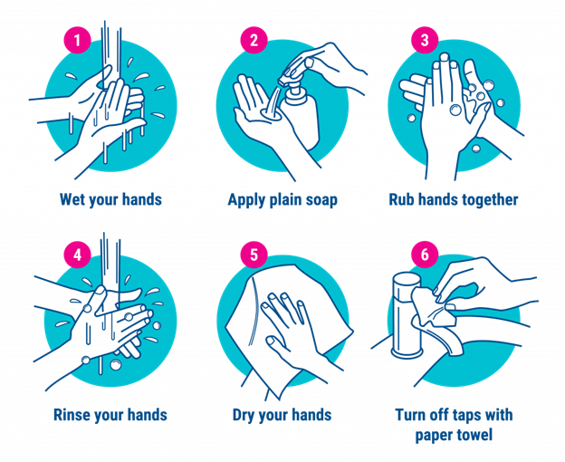
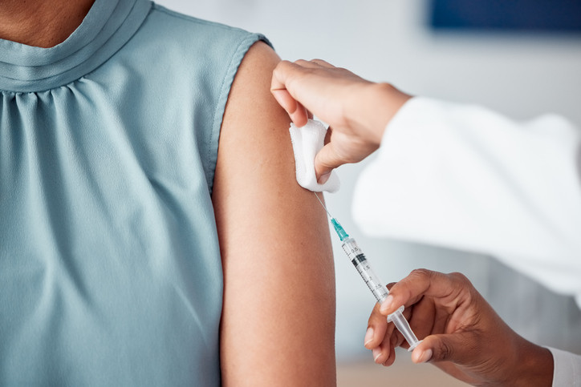
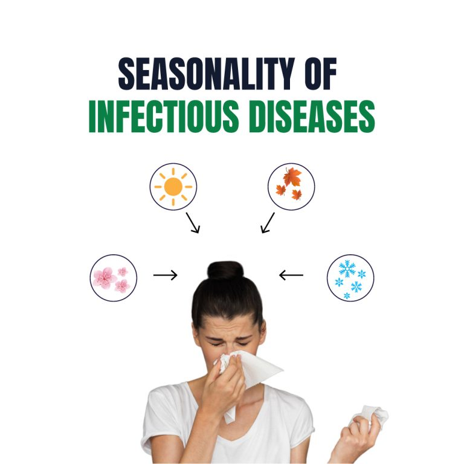

Sebaste Community
Hospital
Sebaste Community
Hospital
Essential disease prevention strategies from Sebaste Community Hospital
In today's world, staying healthy is more important than ever. Whether you're at home, at work, or traveling, practicing a few simple habits can make a big difference. Here are four essential tips to keep you and your loved ones protected from illness all year round.
Handwashing is one of the easiest—and most effective—ways to stop the spread of germs. Here's how to do it right:
Always wash your hands after coughing or sneezing, using the restroom, before eating, and when returning home.
Vaccines protect you from serious diseases and help prevent outbreaks in your community. Here's a quick guide:
Consult your healthcare provider at Sebaste Community Hospital for a vaccination plan tailored to your age and health condition.
Each season brings different health risks. Here's how you can stay prepared:
Regular check-ups and staying aware of seasonal symptoms go a long way in prevention. Visit our clinic at the first sign of unusual symptoms.
Going on a trip? Keep these health tips in mind:
Bring a basic first-aid kit and stay updated with travel advisories from local health authorities.